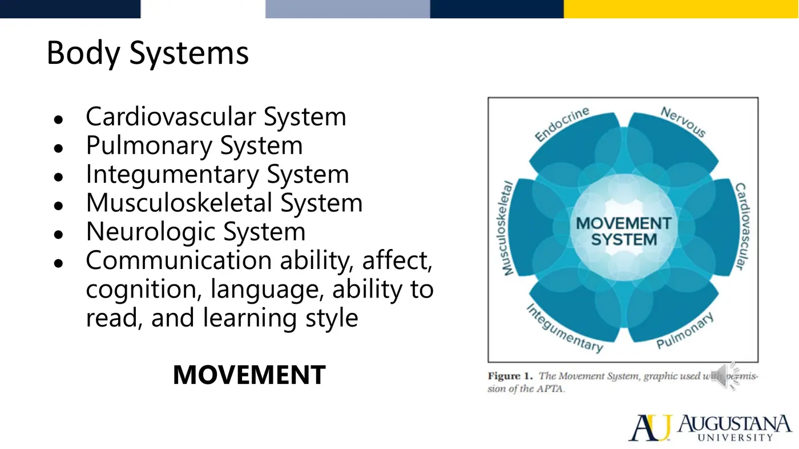
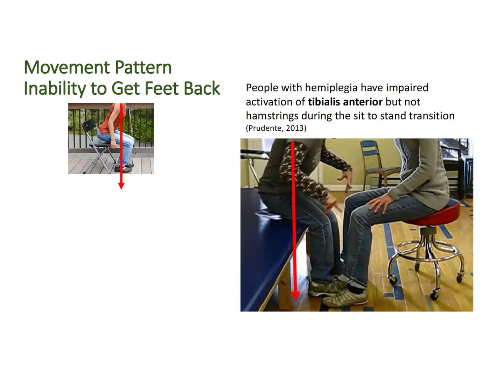
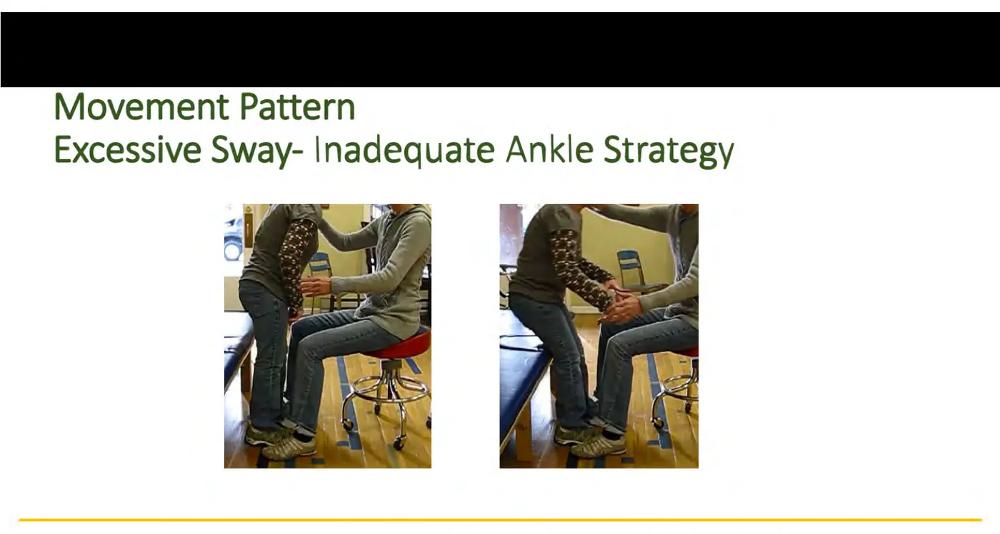
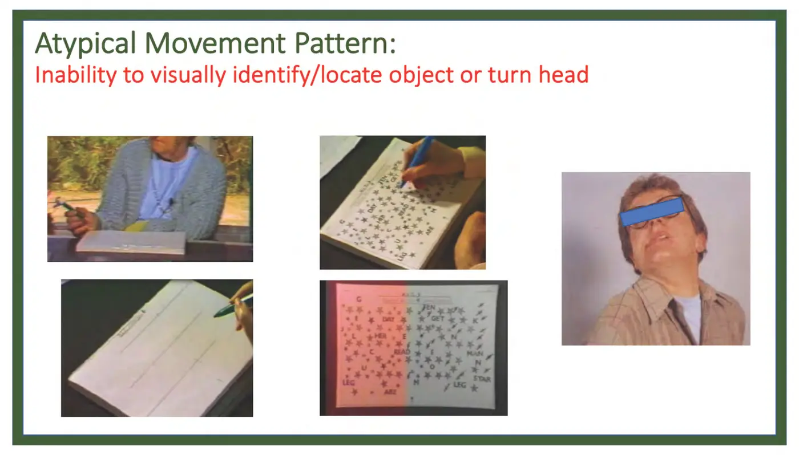
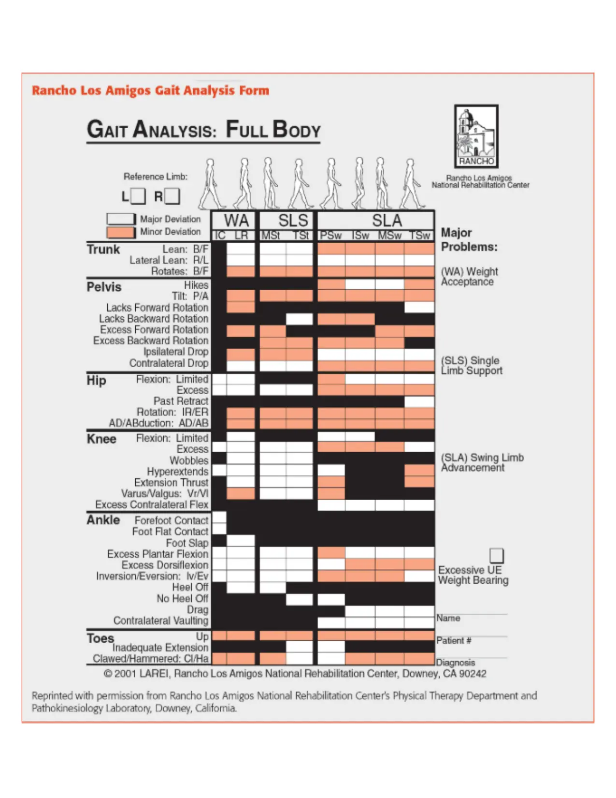

Movement Science · 6221
Module 4 — Analyzing Atypical Movement
Topics: 4.1 Atypical Movement & Underlying Impairments • 4.2 Atypical Postural Control • 4.3 Atypical Mobility (Rolling, Come to Sit, Sit to Stand, Reach & Grasp) • 4.4 Atypical Gait Analysis (RLA tool)
📖 How to Use These Notes
- Best used with the lecture playing — keep these open, follow along, and add your own notes as you watch
- Lecture banners mark the start of each topic and run in the same order as the videos
- 🎙 Callouts = direct insights from the instructor's transcript
- ★ Tips = exam-relevant content or things the instructor told you to prepare
- Figures are taken directly from the module's slide decks
- Each topic ends with its own Quick-Reference Glossary
- Written from last year's recordings — if a lecture has been re-recorded or resequenced, Canvas wins
- Lecturers: Dr. Lindsay Perry (4.1, 4.4, RLA), Dr. Jessica Fuentes (4.2, 4.3 bed mobility), Dr. Cheryl Footer (4.3 STS + reach) — watch in your own Canvas module
- The midterm (Modules 1–3) sits inside this module on the calendar — this module's content feeds the SECOND half of the course
- Blank practice worksheets (rolling, come to sit, sit-to-stand, reach/grasp, RLA gait form) are in this Drive folder — print and drill
- Everything here answers one question: you SEE an atypical movement — which impairments do you hypothesize, and how do you test them?
TOPIC 4.1
Atypical Movement and Underlying Impairments
Atypical movement = unusual, irregular, or abnormal in form, quality, or execution compared to expected patterns. The movement system is a system of systems: an impairment at the body-structure level (ICF) disrupts that structure's function, and the disruption surfaces as movement you can SEE. Your job: read the movement, hypothesize the impairment.

1. Impairments by Body System (not exhaustive — course-level list)
| System | Impairments | How it looks / presents |
|---|---|---|
| Cardiopulmonary | ↓aerobic capacity (limited activity tolerance) • impaired circulation (lymph, venous, arterial → gas exchange) • impaired ventilation/respiration • pain with sustained activity (intermittent claudication from arterial narrowing) | Shortness of breath, profuse sweating, only a few reps, color changes, edema, ↑respiratory rate |
| Musculoskeletal | Pain (fear-avoidance vs sensitized tissue) • impaired muscle performance (weakness, ↓torque, ↓endurance, ↓power) • ROM loss (capsular restriction, hyper/hypomobility, connective-tissue restriction, ↓muscle length, postural deficits, imbalance, synovial fluid, edema) | Movement avoided, limited, or weak — force production is the recurring theme |
| Neurologic / neuromuscular | Neurogenic pain (burning) • impaired postural control + balance confidence • incoordination (timing, sequencing, smoothness, accuracy) • delayed motor development • abnormal tone (hypo/hypertonia, spasticity, dystonia) • impaired motor-control strategies • impaired sensory integrity (light touch, proprioception, reflexes, vision) | Faulty timing, synergy movement, imbalance, inaccuracy |
| Integumentary | Skin hypomobility — scarring, adhesions • wounds | Lost range/amplitude; strategies reorganize around the wound |
| Cognition / communication | Attention, comprehension, memory, learning; executive function (movement is goal-directed: planning + sequencing) | Off-task, can't follow or retain instructions — can be the PRIMARY driver of atypical movement |
2. The Reasoning Chain (why this matters)
- Describe what you see in movement-construct language: symmetry, speed, amplitude, alignment; postural control (verticality, stability); coordination (sequencing, timing, smoothness, accuracy). Then map constructs → movement elements (McClure): motion (MSK + integumentary), energy (cardiopulmonary + endocrine), force (MSK + neuro), motor control (MSK + neuro + cognitive). Then hypothesize the body-system impairments → choose tests & measures → work to recover functional movement.
Topic 4.1 — Quick-Reference Glossary
| Term | Definition |
|---|---|
| Atypical movement | Abnormal in form, quality, or execution vs expected |
| Movement elements (McClure) | Motion · Energy · Force · Motor control |
| Element→system map | Motion=MSK+integ · Energy=CP+endocrine · Force=MSK+neuro · Motor control=+cognitive |
| Intermittent claudication | Arterial-narrowing pain with sustained activity |
| Executive function | Goal-directed planning, sequencing, attention — cognition moves too |
TOPIC 4.2
Atypical Postural Control
1. Three Types, Lifespan, and Aging
- Steady-state (quiet sitting/standing — COM/COP over BOS), anticipatory (predict + prepare: reaching, picking up, standing from a chair), reactive (recover from the unexpected — ice slip, shove from behind; feedback-driven). Development: cephalocaudal (head → trunk → legs); reactive/innate first (primitive reflexes) then refined; rate-limited by visual, vestibular, skeletal maturation — gait isn't mature until ~7 years. Aging: anticipatory + reactive decline — responses are too small AND too slow → falls. Fall detection AND prevention are squarely PT scope.
2. Steady-State Problems
| Problem | Definition | Impairments that produce it |
|---|---|---|
| Alignment | Relationship of body segments to each other, gravity, vertical, or midline — say WHICH reference you mean | ↓ROM, ↓force production, ↓extensibility, ↑/↓tone, asymmetry. Examples: CP child — spastic hamstrings pull the pelvis into posterior tilt (+ gastroc tone) → poor sitting balance; post-op knee — weight shifted off the surgical leg |
| Postural sway | Displacement of COP/COM within the BOS in quiet stance — the GOLDILOCKS principle: too little OR too much are both atypical | Too little: Parkinson's (bradykinesia, rigidity). Too much: excessive excursion. Drivers: ankle ROM, force production, extensibility, tone, somatosensation/proprioception, stance asymmetry, impaired verticality perception, cognition, co-activation, timing/sequencing |
| Limits of stability | The zone you can lean/reach into without losing balance | Shrunken limits = can't reach outside a narrow envelope — anticipatory weight-shift and muscle preparation have contracted |
3. Response Problems (anticipatory + reactive)
| Atypical response | What went wrong | Candidate impairments |
|---|---|---|
| Slow to DETECT | The error signal itself is late — they don't know they're falling | Somatosensory misinformation from the support surface, dual-task/cognitive load, force production, timing/sequencing |
| Slow to REACT | Detected the change, response speed inadequate | Hypotonia (Down syndrome literature — even sarcomere length differs), force production, somatosensory, cognitive, co-activation |
| Amplitude MISMATCH | Response size ≠ perturbation size — ankle strategy when a step was needed (fall), or overreaction | Can't scale/grade force output; spasticity (too many muscles too fast), hypermetria; somatosensory, cognitive, timing/sequencing |
- Sensory system triage: visual = verticality + environment layout; somatosensory = body-in-space, support surface, the joint-alignment chain (ground→foot→ankle→knee→hip); vestibular = head motion detection. Any bad input or failed integration can break steady-state, anticipatory, AND reactive control — always examine the sensory system, at any age, with any diagnosis.
📱 Required PhysioU + worksheets — Topic 4.2
Required reading: Kisner & Colby Ch 8 pp 279–281 (abnormal postural control); Shumway-Cook & Woollacott Motor Control Ch 10 pp 247–277 + summary — focus on the IMPAIRMENTS, not the study details.
Topic 4.2 — Quick-Reference Glossary
| Term | Definition |
|---|---|
| Steady-state / anticipatory / reactive | At rest / prepared-for / unexpected-recovery balance |
| Cephalocaudal | Head-to-tail postural-control development |
| Goldilocks sway | Too little (Parkinson's) and too much are both atypical |
| Limits of stability | The reachable envelope — shrinks in atypical control |
| Detect / react / scale | The three ways a postural response fails |
| Aging pattern | Responses too small + too slow → falls |
TOPIC 4.3
Atypical Mobility: Rolling, Come to Sit, Sit to Stand, Reach & Grasp
1. Rolling & Come to Sit (Fuentes) — bed mobility
- Typical rolling is highly variable — 32 adult patterns (Richter), named by how they're INITIATED. Patient-identified problems that point here: getting out of bed takes longer/is effortful, “I get stuck,” can only sleep on one side, need something to grab, partner has to help, changed the pattern after an injury/stroke.
| Contributing factor | How it breaks rolling / come to sit |
|---|---|
| Sensory | Cutaneous: can't detect sheets/blankets to manage them. Proprioception: segmental start/end points wander — the reach lands wrong, the hand never finds the right spot for the triceps push-up to sitting |
| Motor — alignment | Poor DISSOCIATION of segments: upper trunk from lower trunk (rolling), LEs from trunk (come to sit — legs find the bed edge while the trunk comes upright) |
| Motor — joint ROM | Painful joints (spine, LE, pelvis, SHOULDER) → self-limited range; the unilateral push-up to sitting is where the shoulder bites |
| Motor — muscle properties | Force production, POWER (force over time), extensibility of the rolling engines: SCM, pec major, rectus abdominis, external obliques — length, activation, amplitude, timing |
| Fractionation (Fell) | Moving the target joint through small fragments of range at a variety of velocities. Lost = starts/stops, the stuck mid-reach, the hip lift with too little speed or amplitude, multiple attempts to place the arm |
| Tone | Hypotonia (Down syndrome — longer sarcomeres, altered length-tension; poor recruitment + sustain) ↔ hypertonia/spasticity (velocity-dependent resistance to passive stretch, UMN; SYNERGY movement: extend the arm to push up and the trunk extends too → flat on your back again) |
| Cranial nerves | CN 2/3/4/6 (visuomotor: convergence, double vision — can't sight the bed edge or hand placement) • CN 8 (righting reactions, head position — nausea, lost verticality while the head moves) • CN 11 (SCM itself) |
| Cognition | Attention/processing/memory: off-task, can't follow instructions, yesterday's mastered skill is gone today (motor plan never stored). Perception (a COGNITIVE function — distinct from proprioception, which is sensory): misjudged body position. Orientation/arousal (drowsy or agitated). Pain |
| Cardiopulmonary | Position changes swing HR, BP, SpO2, RPE — supine→sit can drop pressure (head above heart). Watch color, facial expression, respiratory rate; GUARD at edge of bed — and during the roll itself |
2. Sit-to-Stand Part II (Footer) — atypical patterns by phase
- Stakes: post-stroke adults who cannot STS independently are generally discharged to a nursing home or need a full-time caregiver. Typical recap — 4 phases + critical events: flexion momentum (feet back 10 cm behind the knee; trunk momentum around the hip axis), momentum transfer (continued hip flexion + ankle DF), extension (knee → hip → ankle sequencing), stabilization (ankle strategy).

| Phase | Atypical pattern | Hypothesized impairments |
|---|---|---|
| Flexion momentum | Reliance on arms • can't get feet back • insufficient trunk momentum (needs AMPLITUDE + SPEED — too little forward lean, or too much lean done slowly with an arm push) | TA is the anticipatory postural adjustment: ankle proprioception, TA force production + timing, gastroc-soleus length or spasticity; trunk momentum adds fear of falling, rectus femoris + paraspinal force production, timing/sequencing |
| Momentum transfer | Insufficient hip/knee/ankle flexion (typical ≈ 90° hip, 90° knee, 20–25° DF — the deck's photo reads 23°) • asymmetry/reduced limb loading (weight dumped onto one side; prolongs the coming extension phase) | Fear of falling, ankle proprioception, force/power of TA, vastus lateralis, soleus, glute max, gastroc-soleus length. Asymmetry: PERCEPTUAL (orientation to longitudinal axis, LE neglect), somatosensory (LE proprioception, foot cutaneous sensation, pain), gastroc-soleus spasticity |
| Extension | Insufficient extension of trunk/hip/knee/ankle (upright trunk but still flexed hips; or good knees + flexed hip/trunk) • asymmetry (same analysis as above) | Muscle properties: POWER of glute max, quadriceps, gastroc-soleus, TA; paraspinal force production; length of iliopsoas, rectus femoris, hamstrings, gastroc-soleus |
| Stabilization | Excessive sway — inadequate ankle strategy: gastroc never brakes the forward momentum, then the overcorrection flies backward and TA timing fails → falls back onto the mat | Ankle proprioception, TA/gastroc force production + power, gastrocnemius length, gastroc–TA timing/sequencing, gastroc-soleus spasticity |

3. Reach to Grasp Part II (Footer) — atypical patterns by phase
- PIPs by age: adults — bathing, household maintenance (cooking, cleaning, laundry), dressing; adolescents — cutting food, styling hair, typing; children — fasteners (buttons, laces, zippers), cutting meat, drying off; young children — dressing, fasteners, climbing.

| Phase | Atypical pattern | Hypothesized impairments |
|---|---|---|
| Preparatory | Can't visually identify/locate the object • can't turn the head | Cognitive: perception/visual NEGLECT (line bisection, star cancellation). Sensory: visual field — homonymous hemianopsia. Motor: SCM force production or extensibility |
| Transport | Poor PRESHAPING (aperture ≠ object size/shape) • poor trunk–arm dissociation + excessive trunk lean (compensates for missing shoulder flexion/elbow extension) • reduced isolated joint mobility • insufficient arm acceleration + deceleration (velocity curve loses its bell shape — choppy descent = ataxia, no gradual triceps brake) | Preshaping: wrist/finger extensor force, wrist flexor length, wrist/finger proprioception, extensor–flexor timing. Dissociation/lean: anterior deltoid + triceps activation, shoulder/elbow proprioception, paraspinals must fire BEFORE upper trap + anterior deltoid, pec major/biceps spasticity, triceps–biceps sequencing. Accel/decel: force production of upper trap, anterior deltoid, biceps, triceps, wrist/finger extensors, paraspinals; proprioception; ataxia/incoordination |
| Grasp | Can't SHAPE the hand to the object • drops it (can't CREATE slip-grip force) • crushes it (can't MODULATE slip-grip force) | Shape: wrist/finger flexor force, wrist extensor length, proprioception, flexor–extensor timing. Drops: finger flexor activation/timing/force + finger proprioception + cutaneous sensation. Crushes: finger proprioception + cutaneous sensation, finger-flexor spasticity |
Required reading: Motor Control Ch 15 pp 429–432 (transfers + bed mobility); Ch 19 + Ch 20 (reach and grasp). Blank practice worksheets for all four tasks are in this Drive folder.
Topic 4.3 — Quick-Reference Glossary
| Term | Definition |
|---|---|
| 32 patterns (Richter) | Typical adult rolling is highly variable — named by initiation |
| Fractionation | Small-fragment, variable-velocity control of a joint (Fell) |
| Spasticity | Velocity-dependent resistance to passive stretch (UMN); moves in synergies |
| Perception vs proprioception | Cognition vs sensory — file them separately |
| Feet back 10 cm | The STS flexion-momentum critical event; TA is the APA |
| Trunk momentum | Amplitude AND speed — both, or extension gets long and hard |
| Slip-grip force | Create it (or drop), modulate it (or crush) |
| Object ladder | Large-cylindrical-stable-rough-rigid-light → the reverse |
TOPIC 4.4
Atypical Gait Analysis — the RLA Tool
1. The Systematic Approach
- Observe distal→proximal or proximal→distal — pick one and stay consistent, always comparing to TYPICAL gait (critical events, joint ROM, muscle activation per subphase). Every variation is either a deviation from a direct impairment or a compensation — deciding which is the clinical reasoning. Spatiotemporal red flags first: asymmetrical step/stride length, wide or crossing step width, slow speed.
- Functional-task lens: weight acceptance (IC + LR; first double support; 10% of the 60% stance; shock absorption + forward progression + stability), single-limb support (MSt + TSt; 40% of stance; translation of the body over the limb), swing-limb advancement (PSw→TSw; clearance + advancement — and its success rides on the TRAILING LIMB position earned in terminal stance). Since gait is cyclical, fixing one subphase often fixes the next.
- Functional consequences to document: reduced walking endurance, stairs/uneven-surface difficulty, imbalance + fall risk, reduced mobility/independence, complex-movement limits (getting into a car, crowds), reduced social participation — activity limitation and participation restriction travel together in the ICF.
2. The Two Tools
| ANPT Walking Analysis Worksheet | Rancho Los Amigos (RLA) Gait Analysis form |
|---|---|
| Hedman temporal sequence: initial conditions/preparation → initiation (acceleration) → execution (steady state) → termination (deceleration) | Deviation grid: joint/segment rows (toes, ankle, knee, hip, pelvis, trunk) × 8 subphase columns |
| Guiding questions per phase; flags other systems to consider and task modifications | WHITE boxes = major deviations (this course's focus) · orange = minor · black = can't occur in that subphase |
| Does NOT break down the 8 subphases — use its observation section for subphase notes | Sagittal plane dominant; frontal + transverse still checked. Developed at Rancho Los Amigos National Rehabilitation Center |

- Clinical-reasoning cascade: WHY this deviation → which impairment family (pain, strength, muscle length, joint restriction, motor control, sensory input) → what happened in the subphase BEFORE → how it corrupts the subphase AFTER → tests to rule in/out → interventions → reassess and repeat.
3. Required ROM + Critical Events by Subphase (RLA Part 2 numbers)
| Subphase | Hip / Knee / Ankle | Critical events + muscle work |
|---|---|---|
| Initial contact | 20–30° flex / 0° / 0° DF | HEEL STRIKE; leading-limb position; watch the GRF arrow vs each joint axis (moments) |
| Loading response | 20–30° / 5–15° flex / 5–15° relative PF | Heel rocker: eccentric TA lowers the foot; quads eccentric = shock absorption; hip abductors fire to keep the pelvis level |
| Midstance | 0° / 0° / 0→10° relative DF | Plumb-line vertical; ANKLE ROCKER — gastroc works concentrically to control tibial advance over the planted foot |
| Terminal stance | 10–20° EXTENSION / 0° / heel rises, toes ≈30° MTP ext | TRAILING LIMB + controlled heel rise; pelvis rotates BACK ~5°; gastroc peak → propulsion; the phase therapists rehab hardest |
| Preswing | to neutral / 40° flex (passive release) / 20° PF burst | Rapid PF burst + rectus femoris hip pull release the knee passively; pelvis returns to neutral rotation |
| Initial swing | 15–20° flex / 60° flex (max — clearance) / ~5° PF → neutral | Combined hip + knee flexion clears the toes even before the ankle reaches neutral |
| Midswing | 25° flex (max) / 25° flex / 0° DF | Tibia = controlled pendulum — hamstrings ECCENTRIC |
| Terminal swing | 25° / extends to 0° (critical event) / 0° DF | Leading limb re-forms; pelvis rotates FORWARD; hamstrings still braking the tibia |
4. Outcome Measures + Documentation
| Outcome | Measure | Interpretation |
|---|---|---|
| Gait speed | 10-Meter Walk Test (gold standard) — speed is the 6th vital sign | <0.4 m/s household ambulator · 0.4–0.8 limited community · >0.8 community; typical adult >1.4 m/s per lecture. Linked to health status, QoL, falls, community access |
| Endurance | 6-minute walk test (also 12- and 2-min) | Distance over set time; population norms exist |
| Fall risk / adaptability | Tinetti, Timed Up and Go, Functional Gait Assessment, HiMAT | Positional change, turning, obstacles, stairs, running/leaping |
- Documented gait analysis includes: AD + level of assist, environment/surface, spatiotemporal constructs (velocity, cadence, step/stride length, step width), alignment of head/trunk/arms, effort/coordination/amplitude, postural control, stance-subphase and swing-subphase deviations + compensations → clinical summary → assessment. You won't be asked for a movement-system DIAGNOSIS in this course — you ARE expected to hypothesize impairments and correlate.
📱 Required links — Topic 4.4 (PhysioU deviation clips + references)
- PhysioU: gait Deviations series (start here)
- Trunk lean
- Excessive pelvic drop
- Excessive hip abduction
- Hip hike
- Insufficient hip extension
- Genu valgus
- Insufficient hip and knee flexion
- Insufficient knee extension
- Lack of shock absorption
- Limited dorsiflexion
- Excessive dorsiflexion (late heel off)
- Foot-flat contact
- Forefoot contact
- ANPT Movement Analysis Worksheets
- Physio-pedia: Gait
- Physio-pedia: Gait Deviations
Topic 4.4 — Quick-Reference Glossary
| Term | Definition |
|---|---|
| Deviation vs compensation | Direct impairment result vs the workaround for one |
| White / orange / black boxes | Major · minor · impossible for that subphase |
| Trailing limb | TSt hip extension 10–20° + backward pelvic rotation — propulsion's setup |
| Knee 60° at initial swing | THE clearance number |
| Heel rocker / ankle rocker | Eccentric TA at LR / concentric gastroc control at MSt |
| 10MWT cutoffs | <0.4 household · 0.4–0.8 limited community · >0.8 community |
| 6th vital sign | Gait speed |
| Subphase-before rule | Today's deviation is often yesterday's subphase failing |
SYNC SESSION
Deviation Tables + Video Reasoning (Dr. Grimes & Dr. Perry)
The sync runs the whole module's logic live: observe → describe with movement constructs → identify body systems → hypothesize impairments → test through examination. Balance framing worth quoting: balance is the observable OUTCOME of postural control; it's atypical when strategies are ineffective or maladaptive — an impairment that disrupts movement (MSK: ↓ROM/strength/asymmetry · neuro: tone, poor timing · sensory: somatosensory/vestibular/visual input · cognitive: ↓attention, delayed reaction). Then it's gait-video breakouts using these tables — transcribed here from the sync deck.
Common Deviations: Toes / Foot / Ankle (sync table)
| Deviation | Description | Possible cause | Phase |
|---|---|---|---|
| Forefoot / foot-flat contact | Initial contact with forefoot, or whole foot lands at once | Weak DF, limited ROM / spastic PF | WA (IC) |
| Foot slap | Uncontrolled PF after heel contact — audible slap | Weak DF | WA (IC) |
| Heel off | Heel never touches during LR or MSt | PF spasticity/contracture, impaired proprioception, pain | WA (LR), SLS (MSt) |
| No heel off / no heel rise | No heel rise in TSt or PSw | Weak PF, pain, inadequate toe extension, excess DF | SLS (TSt), SLA (PSw) |
| Inadequate toe extension | Toes can't reach 30° MTP extension | Limited toe ROM, toe-flexor hypertonicity, forefoot pain, or downstream of no heel off | SLS (TSt), SLA (PSw) |
| Drag | Toes/forefoot/heel contact ground during advancement | Limited hip flexion, limited knee flexion, or excessive PF | SLA (ISw, MSw, TSw) |
| Foot drop | Can't DF the forefoot | Weak or delayed DF contraction; spastic PF | SLA (ISw, MSw, TSw) |
| Excess DF/PF, inversion/eversion | More than the phase calls for | Various | Swing + stance |
| Contralateral vaulting | OPPOSITE stance limb rises onto its forefoot | Compensatory for limited swing-limb flexion or a longer swing limb | Reference limb's SLA |
Common Deviations: Knee (sync table)
| Deviation | Description | Possible cause | Phase |
|---|---|---|---|
| Hyperextension | Knee beyond neutral, MSt→TSt | Weak quads, PF contracture, extensor spasticity (quads and/or PF) | WA (IC, LR), SLS, SLA (PSw) |
| Extension thrust | FORCEFUL snap toward extension, MSt→TSt | Impaired proprioception, quad hypertonicity, PF hypertonicity | WA (LR), SLS |
| Wobbles | Alternating flexion/extension within a single phase | Impaired proprioception, quad/PF hypertonicity, weak quads | WA (LR), SLS |
| Varus / valgus | Lateral / medial tibial angulation vs femur | Joint or ligament instability, bony deformity | SLS (MSt, TSt) |
| Excessive knee flexion | More than the phase's norm — stance: less limb stability; swing: shorter step, spoils IC | Stance: weak quads (buckling) or flexion contracture (+ forward-trunk-lean compensation); swing: flexor spasticity | WA (IC, LR), SLS; SLA (TSw) |
| Limited knee flexion | Less than the phase's norm — stance: less shock absorption + tibial momentum; swing: no foot clearance | Stance: impaired proprioception, knee pain, extensor spasticity; swing: extensor spasticity, pain/↓ROM, weak hamstrings | WA (LR), SLA (PSw, ISw) |
Common Deviations: Hip / Pelvis / Trunk (sync table)
| Deviation | Description | Possible cause | Phase |
|---|---|---|---|
| Excess hip flexion | Less than normal hip EXTENSION for the phase | Weak hip extensors, tight/spastic hip flexors | WA (IC, LR), SLS (MSt, TSt) |
| Limited hip flexion | Less than normal hip flexion for the phase | Weak hip flexors, tight extensors/limited ROM, hip pain | WA (IC, LR); SLA (all swing) |
| Hip circumduction | LE swings out and around (abd/ER → add/IR) | Weak hip and knee flexors | SLA (ISw, MSw, TSw) |
| Hip/pelvic hike | One side of the pelvis elevates toward the shoulder | Intentional swing-limb clearance; compensatory for weak hip/knee flexors or extensor synergy | SLA (ISw, MSw) |
| Contralateral pelvic drop (Trendelenburg) | OPPOSITE iliac crest sits lower than the reference side | Weak hip ABDUCTORS on the reference limb; adductor spasticity; intentional lowering for the other limb's IC | WA (LR), SLS (MSt, TSt) |
| Lateral trunk lean | Trunk bends toward the SAME side as the weakness | Weak hip abductors (glute med); avoiding hip pain; compensatory for a short or unclearable swing limb | WA (LR), SLS, SLA |